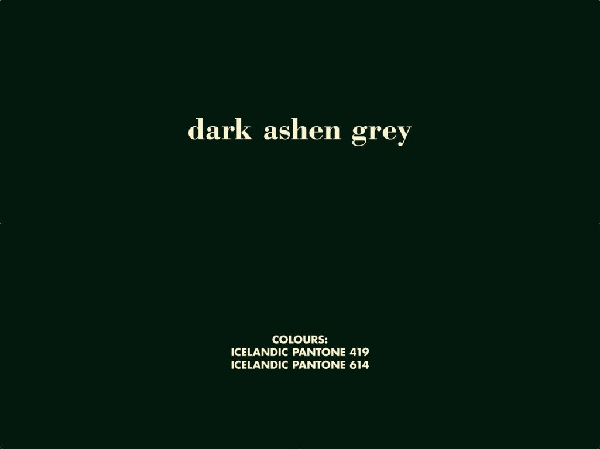

Introducing Non-Human Travellers
Narrating the history of Lupinus Nootkatensis in Iceland presents a case study of struggle at various levels. A history of unsustainable practices. The analysis of a specific case such as the Lupina will serve as an introduction to a global phenomenon — adaptation to ecosystem imbalance. The choice of the main character in this tale is related to my own personal circumstances. I grew up in France with British and Icelandic parentage. Through my multinational background, I was entitled to the Icelandic nationality in the form of a legal document. A passport issued by the national government was handed to me as an official travel document, granting me the possibility to travel across human made borders. This convenient and privileged document allows me to move freely between European states since Iceland is a member state in the Schengen agreement, and acquiring visas is fairly easy to travel across the globe.
The Icelandic passport currently ranks on the 11th place according to the Guide Passport Ranking Index.
By inheriting these privileged rights, I confer certain advantages in this time of globalisation. The question of nationality has shifted since borders between nations have been opening up amid the ongoing acceleration of globalisation. Advances in transportation and technology have radically increased the exchange of goods
“pictured as the threads of an immense spider web formed over millennia… People, money, material goods, ideas, and even disease and devastation have traveled these silken strands, and have done so in greater numbers and with greater speed than ever before in the present age.”
National Geographic Society. “Globalization.” National Geographic Society, 9 Oct. 2012, www.nationalgeographic.org
/encyclopedia/globalization/.
The phenomena is perfectly illustrated by the current COVID-19 pandemic that has quickly spread worldwide. For my line of enquiry, I could have chosen from many themes and examples, however, I deliberately decided to limit my investigation to rarely discussed non-human travellers. While some migrations follow the seasons, others are the result of involuntary dislocation to unfamiliar habitats. Many perish, but others survive or even flourish in the new environment. Lupinus Nootkatensis is an example of the latter, having been deliberately introduced from Alaska to Iceland.
Lupinus Nootkatensis is the protagonist around which I chose to elaborate my narrative. The plant develops into a dynamic character in the course of my story which is then transformed to bring in different genres from historical to fiction, finally evolving into a thriller that ends as a mystery case.
Through deconstructing the anatomy of the plant, by examining its physical properties and by redefining events and making new associations, I would like to introduce an array of interrelated topics that mirror to some extent the complexity of ecosystems themselves. In this way, I question the terms: “sustainable”, “parasite”, “invasive” and “natural". These terms are globally established but convey different meanings locally.
Returning to Lupina, we can start by considering the soil on which it grows to elaborate on the history of the colonisation of the Icelandic landscape. This leads us to multi-species interaction by taking the example of the root nodules system, formed through multi-species interdependence. The uptake of minerals relies on systems of transport and structural support provided by the stem, which I have used as a metaphor to look at migration and the rules brought in to mitigate invasive species. The reproductive system or flower is an emblematic visual signal – of which the distinctive purple colour is transforming the landscape and the way it is perceived.
My study will take the form of a collection of short stories – as the flower unfolds.
 Fig.1
Fig.1 Diagram of Lupinus Nootkatensis, two images one being the flower and the second being the roots
[SOIL]
Earthly memory
The myth of a treeless landscape
Once the plant has established a root system, it cannot cross borders, migrate or relocate. The story is therefore set in a predefined environment dictated by past events. “[The plants] Their absence of movement is nothing but the reverse of their complete adhesion to what happens to them and their environment.” Coccia, Emanuele. The Life of Plants: A Metaphysics of Mixture.Polity Press, 2018.
 Fig.2
Fig.2 Unicellular root hairs through the soil particles.
Lupinus Nootkatensis thrives in the Northern Hemisphere. In Iceland, it has settled in a fragile, geologically recent landscape which has been exposed to massive alteration. The island is regarded as extremely young geologically, and the formation of its soils date back only 10,000 years. Björn, Jóhannsson. The Soils of Iceland with a Generalized Soil Map. Dept of Agriculture, Reports Series B- No.13. Reykjavik: University Research Instit, 1960
Fig.3Cartography of soil erosion in Iceland by the Agricultural Research Institute and soil conservation service. Serious soil erosion characterises 40% of Iceland landscape. The map gives an indication of the immense task ahead of both combating desertification and restoration of damaged ecosystems. (Arnalds et al., 2001).
The ecosystem is influenced by the warm Gulf Stream. Iceland is home to volcanoes that are dynamic, either erupting or slumbering, glaciers that have formed and then retreated, and weather patterns that remain unstable. The sculpted landscape has resulted in microclimates most sensitive to any disturbance, where it is key to keep a balance to sustain a coexistence between individual species, be they organic, an-organic, human or animals etc.. No wonder NASA selected Iceland as a destination for the members of the Apollo mission to the moon for field training in the years 1965 and 1967. “[NASA] was looking for places that would roughly approximate the geological features of the moon,” “Apollo Astronaut Training in Iceland – the Exploration Museum.” The Exploration Museum, 3 Dec. 2013, www.explorationmuseum.com/astronaut-training/. Accessed 22 Jan. 2022 says Stephen Garber. A barren, fragile, newly-formed volcanic terrain most sensitive to any disturbance.
Fig.4The NASA astronauts, during their training period in Iceland for the APOLLO mission to the moon.The exploration museum, 1967.
The soil preserves and records a memory of past events, each sediment, each geological layer is a data store of historical information. Or as Elizabeth Povinelli puts it ”the earth as a set of stratified levels of being and time.”
e-flux journal #81 — april 2017 Elizabeth A. Povinelli Geontologies: The Concept and Its Territories
Therefore, it also recalls traumas. This is a story of remembrance, of a trauma buried deep underground.
The narrative begins long before the introduction of Lupinus Nootkatensis, to when Iceland was first discovered and colonised by European settlers at around A.D. 870. Records of the first inhabitants were orally transmitted until the 12th century, when Ari Thorgilsson the Learned
Ari Thorgilsson the Learned was Iceland’s most prominent medieval chronicler. Also named Ari the Wise as he was the first to write history in Old Norse.
compiled these into a book known has the Íslendingabók.
Historical information on the first Norwegian settlers in Iceland. Also referenced as the unique Icelandic genealogical record, it remains alive as a database online source of Islandic genealogy https://www.islendingabok.is .
Ari Þorgilsson, Historiker, and Siân Grønlie. Íslendingabók: the Book of the Icelanders ; Kristni Saga, the Story of the Conversion. London, Viking Society For Northern Research, 2006
The author is therefore originally constrained to rely on oral history, which leads to some extent to myth and imagination, most notably told in the great Icelandic Sagas, relating the exploits of those early settlers, which further developed into a type of popular romantic fiction.
“From Latin sources may be learned the names of those who sailed here from the Western Islands in the early days of the Papacy. Their leader was Kolumkilli the Irish, a sorcerer of wide repute. In those days there was great fertility of the soil in Iceland. But when the Norsemen came to settle here, the Western sorcerers were forced to flee the land, and old writings say that Kolumkilli, determined on revenge, laid a curse on the invaders, swearing that they would never prosper here, and more in the same spirit, much of which has since, to all appearances, been fulfilled.”
Laxness, Halldor. Independent People. New York, Random House, 1996.
Here, Halldór Laxness relies on the oral history of Icelandic settlement to base his fiction, considered among the foremost examples of social realism.
Sjálfstætt fólk, written in Icelandic during the 1930s.
Parts of his novel appear to be true facts, if the source of oral transmission is to be relied upon. According to Íslendingabók, Irish monks, also known as Papar, initially discovered Iceland and quickly abandoned the country when the Norse arrived.
Diamond, Jared. Collapse How Societies Choose to Fail or Survive. London Penguin, 2011.
Halldor Laxness’ description of the land pre-settlement is relevant.
The Valþjófsstaður door is a medieval carved church door kept today in the National Museum of Iceland. British Library, 1889.
Let’s rewind back to the time when the island remained undiscovered and in pristine condition. This specific period recalls a major transformation from when “The lowlands were mostly covered by low birch and willows forest”. Diamond, Jared. Collapse How Societies Choose to Fail or Survive. London Penguin, 2011. Before Jared Diamond researched his book in the 21st century, Lupinus Nootkatensis was aware of the facts. She knew the soil; the structure of the land. Like the octopus, the plant is able to sense the terrain and further follows its own logic and creates its own cartography or knowledge system. She settled initially on the south coast of the island, where debris of an ancient woodland still remains beneath layers of dead and living organic matter. Trunks and roots preserved through centuries depict a scene of deforestation. Not far away, a glacier containing pollen residue from the same time period reinforces the theory of a very different botanic environment. This knowledge has been preserved and stored until a crisis exposes it to the elements. Traces of a different environment persist into the deep time of the future.
Fig.6Film still from “Milli fjalls og fjöru - Woods Grew Here Once”.
It seems there is a twist to the plot of two separate events when actually they are linked. Jared Diamond discloses the scenario : “They (the colonisers) were instead exploiting soil and vegetation in the way that miners exploit oil and mineral deposits, which renew themselves only infinitely slowly and are mined until they are all gone.”. Diamond, Jared. Collapse How Societies Choose to Fail or Survive. London Penguin, 2011. “Collapse” , the title of his book, conveys the history of societies that were not in harmony with their habitats. It is a recurrent theme worldwide, today being played out on a massive scale. The coloniser has acted in the belief that any human transformation over nature is acceptable as long as it is economically profitable. A story of conquest. An unsustainable lifestyle has been a model for a majority of settled societies. In our case, what appears to be a major factor behind the island landscape’s fate, is the incorporation of the colonisers’ homeland agricultural practice without considering the true characteristics of the newly found habitat. However small the damage that occurred during the viking times it is now one of the most heavily degraded in Europe. From an estimated original 60% of vegetation cover on the land, down to a mere 20%. Magnusson, Magnus. Iceland Saga. Stroud, Gloucestershire, Tempus, 2005. An unsustainable settled lifestyle based on animal husbandry and dependent on the production of iron tools led to almost total deforestation, destabilising the soils which were then washed or blown away.
Fig.7Viking age archaeological find of Iron tools. Tongs, anvils, hammers and a file. (The Mastermyr Find: Gosta Berg, Greta Arwidsson (Paperback, 2000))
Going back to the historical oral transmission and writings of the Sagas, leads us to understand the decision-making of the Norsemen and its consequences. Their previous habitat, Norway, was ruled under a Monarchy that encouraged the colonial project and the Norse to discover new rich lands in order to gain more profit. This led the Norsemen, the first European explorers of the North Atlantic, to encounter Iceland.
Diamond, Jared. Collapse How Societies Choose to Fail or Survive. London Penguin, 2011.
These adventurers returned to their home country delivering stories of their new discoveries with detailed reports whereas to the location of potentially profitable settlements. They then shipped the necessary needs in order to replicate the exact copy of their habitat systems that they had previously founded without the ability to consider the consequences of any changes made to the new habitat they were entering. The colonisers assumed the trees were a mere material for shelter structure, ships, tools, heating and the production of iron tools; in order to extract the natural iron found in bog iron, a large amount of wood is required for kilns to reach the necessary temperature for fusion point to extract the metal and create tools used for agricultural or domestic purposes. The settlers also introduced domestic animals such as sheep, horses and cows that prevent new shoots from growing. Therefore the native birch trees no longer had the chance to rise. As a result, the Norsemen were forced to face challenges they weren’t accustomed to, a destabilised ecosystem increasingly unable to support their lifestyle.
Diamond, Jared. Collapse How Societies Choose to Fail or Survive. London Penguin, 2011.
During the 18th century, an Icelandic naturalist Sveinn Pálsson explored the east coast of the islands and recorded his observations of Hallormsstaðaskógur site:
“And, so this beautiful district will experience the same fate as other forested areas of Iceland. It will be a mark of shame for the old, and disservice to the yet unborn! Everywhere, yet particularly at Hallormsstaður and the innermost valleys, is there evidence of rueful destruction. The beautiful birch trees have been decimated in these parts, but not from the roots; rather, they have been chopped down at heights as high
as man, so the area looks like swarming phantasms, erect ghosts, which at first terrified my horses.”
Sveinn, Pálsson. Ferðabók Sveins Pálssonar I. 1794
Trees being carried on horseback from Þórsmörk for charcoal making and other domestic uses in the late 19th century. SKÓGRÆKTIN archive.
“The Anthropocene marks the moment when human existence became the determinate form of planetary existence - and a malignant form at that - rather than merely the fact that humans affect their environment”. e-flux journal #81 — april 2017 Elizabeth A. Povinelli Geontologies: The Concept and Its Territories In the last century, new terminologies attempt to untangle the dawning of our ongoing struggles regarding climate change. Through the observation of the island’s earthly memory and “speculative fabulation” of the prior inhabitants we could draw a line to the first Norse settlement being the source of many unfolding environmental issues. Although natural phenomenas in Iceland such as storms or volcanic eruptions amplifies soil erosion, recent studies acknowledge the fact that human activity accelerated radically the degradation of the land. Therefore alternative activities were used regarding soil conservation and these were deemed crucial in order to remain self-sufficient. Practices that were once a destructive exploitation of the land were altered for conservation of the soil. Soil Conservation Services were founded and empowered in 1907 by the government to halt and later revert land degradation. It is today the oldest organisation of it’s kind in the world still in operation. Crofts, Roger. Healing the Land. Soil Conservation Service of Iceland, Gunnarsholt, Iceland, 2011.
[ROOT]
Multi species coexistence
The project of healing the land
 Fig.9
Fig.9 External root structure diagram.
“The roots make the soil and the subterranean world a space of spiritual communication. Thanks to them, then, the most solid part of the Earth is transformed into an enormous planetary brain through which matter circulates, along with information on the identity and state of the organisms that populate the surrounding environment.”
Coccia, Emanuele. The Life of Plants: A Metaphysics of Mixture. Polity Press, 2018.
The tale of Lupinus Nootkatensis in Iceland began a century ago. The actions of the community at that time created a dilemma for the following generations. During the 19th century, a solution was deemed crucial in order to restore the quality of depleted or exhausted soil. Experiments were then realised by the newly independent nation as part of the project of ‘healing the land’.
Crofts, Roger. Healing the Land. Soil Conservation Service of Iceland, Gunnarsholt, Iceland, 2011.
Lupinus Nootkatensis, native origin of Alaska, was deliberately introduced in Iceland in 1945 at reforestation sites, for its fertilising properties. A human act to engineer and reverse the trend of environmental collapse.
Borgþór Magnússon, 1995
During the time of introduction, the plant made a great impression as it is an effective and fairly inexpensive tool in soil reclamation.
Magnússon, Borgþór. Náttúrufræðistofnun Íslands and Landgræðsla ríkisins. 2010
Field of Lupinus Nootkatensis in Iceland. Image credit Anjali Kiggal, 2015.
The Plant was able to readjust itself to the unfamiliar habitat and took roots into the unknown soil. An act of coexistence between the plant and the nation. The nation adored the flower as it effectively appeared to restore sandy and barren parts of the land and blooms into a mesmerising purple colour, covering the landscape with an exotic tint.
Fig.11Nodules on soybean roots. Photo courtesy of Hans Kandel, North Dakota State University.
In the same way that Ursula K. Le Guin presents in her carrier bag theory “that story not only has Action, it has a Hero. Heroes are powerful.” Le Guin, Ursula K. Carrier Bag Theory of Fiction. S.L., Ignota Books, 2020. therefore it appealed to the public. The plant took the stage as the hero, when actually, it is the beneficiary of a symbiosis. The main actor here, is the Rhizobium bacteria, without these “colonisers” the flower wouldn’t survive in such nitrogen depleted landscapes and would then be dependent on other factors to assimilate nitrogen. Lupinus Nootkatensis is part of a bigger family called the legumes. Legumes have remarkable properties in fertilising the ground.They form colonies with Rhizobium bacteria. The host cell in contact with the bacteria will provide a compartment for the bacteria to coexist. This symbiotic relationship results in the formation of root nodules. The plant is able to fix atmospheric nitrogen with the aid of the bacteria and grow rapidly, fertilising depleted sandy soils with nitrogen-rich litter. Stacey, Gary. Biology of the Nitrogen Cycle. 2007 In scientific literature the term “infected” is often used to describe this mutualism.
Fig.12Transversal section of the single root nodule harvested from Lupinus.
Such terminology implies a pejorative connotation, whereas in fact both parties are benefiting from this mutual coexistence. Rhizobia supply ammonia to the plant and in return receive organic acids as an energy source. They even fashion a new means of communication composed of signal exchange in order for both partners to recognise and develop a symbiotic structure.
The question might be asked as to whether the nation would be as positive to the decision-making behind Lupina introduction, if it was presented as a Bacterial process? Today’s society does not necessarily depict bacteria as the greatest Hero of all time.
Contrary to scientific knowledge, bacteria are often characterised as “vermin”, perceived as despicable and harmful for the rest of society. Omnipresent anti-bacterial advertisements have brainwashed society and deepen the gulf in understanding of bacteria/human interdependence. So far, we don’t even consider the vast amounts of bacteria embedded within our own bodies. Studies have proven that there is more “foreign” species than human cells in our body.
https://www.sciencefocus.com/the-human-body/human-microbiome/
It is somehow remarkable that we manage to separate human from nature, when our so called “own” anatomy is bound to trillions of other entities.
Lynn Margulis proposes a new narrative: “life did not take over the world by combat, but by networking”.
Margulis, Lynn, and Dorion Sagan. Microcosmos Four Billion Years of Evolution from Our Microbial Ancestors. New York, Simon And Schuster, 1991.
Her theories are controversial in modern science. She questioned Neo-Darwinist notions of competition-led evolution and suggested an alternative process of symbiosis, cooperation, and bonding between organisms. The theory of Neo-Darwinism was taken as standard at a time when Margulis was dominated by an extremely male scientific establishment that was constantly rejecting her research.
“interspecies entanglements that once seemed the stuff of fables are now materials for serious discussions among biologists and ecologists, who show how life requires the interplay of many kinds of beings.”
Tsing, Anna Lowenhaupt. Mushroom at the end of the world : On the Possibility of Life in Capitalist Ruins. S.L., Princeton University Pres, 2021.
Anna Tsing encourages other ways of thinking that are detached from a predominant western discourse.
This based on the foundation of a segregationist and rationalist conception of morality. These values originate from the humanist tradition. As reasonable and gifted beings of logos, men must be able to develop a morality that can be universalised. This conception assumes that man is more than other species and at the same time serves to distinguish him from the biological genus. Modern thought therefore relies on this hierarchy to establish an ontological superiority. Humanity consequently has the capacity to strive for an ideal moral through reason, detaching oneself from what relates only to the body and more generally to the realm of the sensitive, which is considered inferior. In other words, such a morality involves the denaturing of man. Nature is then associated with materiality, unlike man who rises through spirituality. It is therefore by isolating the human from other entities and denying his share of animality that man can, according to the logic of the Stoics, become a moral being. This can also be translated into the exclusion of other living forms to shape justice or politics, which can consequently be legitimately exploited according to human needs. René Descartes completes this dichotomy between nature and mankind by his reflection on the duality between body and soul. Nature, animality and even our body is therefore regarded as a machine; it neither thinks nor reasons. The living form is identified to be this simple autonomous material. This modernist thinking tracing back to Rene Descartes, is then embodied in scientific theories, creating a table of hierarchy with mankind on the top and the rest of nature as means to be used for the requirements of human fulfillment. The exploitation and control of nature heightened by this perceived supremacy has led to a continuous imbalance of the ecosystem, but also the emergence of several anomalies.
The last few decades have witnessed the emergence of intellectual ideas critiquing scientism and Western discourse. Such as Lynn Margulis, Anna Tsing or Donna Haraway which clearly acknowledge the damage of human footprints and considers these ruined areas as a future flourishing through symbiosis as a practice of repairing damaged places.
Haraway, Donna. Staying with the Trouble: Making Kin in the Chthulucene. Durham and London, Duke University Press, 2016.
The Soil Conservation Service of Iceland played an important role in restoring depleted sandy soils, however some measures wasn’t thought through carefully in the long term and backfired with new concerns.
[STEM]
Structural support
Short term VS long term initiative
“It is through the root system, in effect, that a plant acquires the vast majority of information on its own state and that of the environment in which it is immersed” Coccia, Emanuele. The Life of Plants: A Metaphysics of Mixture. Polity Press, 2018. and sends the message to the aerial structure through the stem. The stem is therefore the canal of communication of the plant and the system of transport of information. Additionally the plant elevates itself by the vertical extension of the stem, it is therefore the visible structural support.
Fig.13Monocot stem diagram.
Currently we are faced with the serious consequences of past and ongoing practices worldwide. The crisis is becoming increasingly noticeable and hard to ignore. The environment has been sending warning signals while struggling to maintain a balanced ecosystem. The cause is an unsustainable economic and agricultural system that is fuelled by industrial progress. The earth is being drained, burned, depleted, poisoned, exterminated, and otherwise exhausted. Moore, Jason. Capitalism in the Web of Life: Ecology and the Accumulation of Capital. Verso, 2015. Man made climate breakdown is altering natural balance and behaviour. Biodiversity is forced to adjust to the changing environment and does not always manage to adapt. In these times of warning, governments attempt to intervene, playing catch-up and introduce measures according to the most urgent needs of a world in constant flux.
Fig.14Here is a mapping of the spread of Lupinus Nootkatensis in Iceland. Náttúrufræðistofnun Íslands, 2007.
The introduction of Lupinus Nootkatensis in Iceland is now under surveillance by the Icelandic government and European commission. It has been identified as an “Invasive Alien species”, quickly colonising large areas of land, thereby threatening indigenous Icelandic species. Over the last 30 years, Nootka lupine has been extensively planted in eroded areas throughout the country in order to play an active role in the repair of severely degraded soils. The cost of the intervention is fairly low and as a consequence the strategy is a profitable economical option in the short term. Crofts, Roger. Healing the Land. Soil Conservation Service of Iceland, Gunnarsholt, Iceland, 2011. However one characteristic of the plant is that it grows taller than the native flora and so prevents other vegetation from flourishing. Magnusson, B. (2010): NOBANIS – Invasive Alien Species Fact Sheet – Lupinus nootkatensis. – From: Online Database of the European Network on Invasive Alien Species – NOBANIS www.nobanis.org More recent studies suggest the flower, because of the high density of its population, could potentially harm the pollinator populations in Iceland if it continues to spread, “From a state where plant-pollinator mutualisms sustain themselves, to a state where numerous plant-pollinator mutualisms are lost.” Willow, Jonathan, et al. Potential Impact of Nootka Lupine (Lupinus Nootkatensis) Invasion on Pollinator Communities in Iceland. Icelandic Agricultural Sciences, vol. 30, 2017, pp. 51–54. Crossref, https://doi.org/10.16886/ias.2017.06. Climate change further boosts the expansion of the invasive species thus making it an increased threat and challenge for the future unless action is taken. However these measures should be thought through carefully as the lupine is rooted in the landscape and has built up a seed bank in the soil.
Fig.15Screenshot of The day of the triffids a post-apocalyptic movie showcasing an aggressive species of plant.
“We must also fear that the short-term solutions proposed by these disciplines would reproduce the causes of the problem by reinforcing them. The long-term causes are less obvious; they must now be set forth” Serres, Michel. The Natural Contract. Ann Arbor, Mich., University Of Michigan Press, 2011. Michel Serres stresses the importance of the decision-making process of humankind on its planetary habitat. “NOBANIS” or “The European Network on Invasive Alien Species” provides tools for implementing the precautionary approach against the dispersal of invasive alien species. This is seen as a major possible cause for biodiversity loss in the future. The establishment of the organisation was brought about as a response of the Convention on Biological Diversity by the European Commission. In 2014 the EU submitted regulations and estimated, “Some 12 000 species in the environment of the Union and in other European countries are alien, of which roughly 10 to 15 % are estimated to be invasive.” “Combat Invasive Alien Species – Target 5 - Environment - European Commission.” European Commission, ec.europa.eu/environment/nature/biodiversity/strategy_2020/target5/index_en.htm. Accessed 21 Feb. 2022. So how do you control the spreading of a plant? What kind of measures are available?
Fig.16The community participates in activities to reduce the spread of Lupinus Nootkatensis. Þorvaldur Örn Árnason, 2018.
In New Zealand, the ground application of herbicides is the main method used. It is a risky technique since these procedures target a specific type of vegetation but could affect surrounding areas and damage the soils by contamination. Again we observe a short term strategy. Rob Nixon describes the process as “slow violence”,
Nixon, Rob. Slow violence and the Environmentalism of the poor. Harvard University Press, Cambridge, Massachusetts and London, 2011
“that violence does not only occur instantaneously but rather continues through the disruption and erosion of life cycles and thereby appears more diffuse, and sometimes almost invisible.”
Meszaros Martin, Hannah. “Defoliating the World.” Third Text, vol. 32, no. 2–3, 2018, pp. 230–53. Crossref, https://doi.org/10.1080/09528822.2018.1486526.
These terms are reinforced now that we are faced with environmental violence worldwide.
The practice of herbicide use is a product of the 20th century. The manufactured origin of toxic agents for deliberate deployment in the environment dates back to WW1, where the intention was to target the opponent via the atmosphere. Peter Sloterdijk defines the practises as Atmoterror : “The 20th century will be remembered as the age whose essential thought consisted in targeting no longer the body, but the enemy's environment. This is the basic idea of terrorism in the more explicit sense.”
Sloterdijk, Peter. Terror from the Air. Semiotext(e), 2009.
Yet the environment in this case was exploited as a mere vector for the mission. Since then a century has elapsed and the land was so damaged following the fumigation that it is still deemed contagious to human habitat and restrictions are applied within an area known today as the Zone Rouge.
Gaz attack during WW1, Somme. (GEORGE METCALF COLLECTION, CANADIAN WAR MUSEUM—19700140-077)
Henceforth, herbicides were developed with the aim of facilitating combat by clearing the war zone from what was merely seen as an obstacle to vision, vegetative obstruction. Agent Orange an herbicide and defoliant chemical was massively released by the US military upon Vietnamese territory, ravaging everything it touched. “In Vietnam, unlike in past conflicts where violence was mainly directed at the enemy’s food crops, the primary target was the forest itself.” Meszaros Martin, Hannah. “Defoliating the World.” Third Text, vol. 32, no. 2–3, 2018, pp. 230–53. Crossref, https://doi.org/10.1080/09528822.2018.1486526. In this case the leaves are considered culpable by the US military in assisting to veil the enemy. Treated in such a spirit, the violence, after it had ceased on paper, left deep wounds which remain apparent. Forty percent of mangrove forest destroyed, soil erosion, flooding, loss of biodiversity, emergence of invasive plants and animals; these are the consequences of the chemical war waged on the ecology of Vietnam. Frey, R. Scott. “Agent Orange and America at war in Vietnam and Southeast Asia.” Human Ecology Review 20:1 (Summer 2013), 1-10. https://www.jstor.org/stable/24707567.
Fig.18Courtesy C-123 Aircraft Spraying Agent Orange In Vietnam.
In more recent times cultural and economic practices are woven so tightly together within the ecosystem that they are impossible to disentangle. This is particularly noticeable in the production of illegal drugs derived from plants. Coca plants are condemned to eradication by law being the source of cocaine. In doing so, the plant has metamorphosed into a felon deemed to be razed where it no longer conforms to legal product design. Co-criminalisation follows as the plant is cultivated inside the forests of Columbia and fumigation ensues without consideration to surrounding livelihoods. “Dried earth with dried leaves-everything is dead or dying. It looks as if the forest floor has been bleached out, and left in a twisted pattern of brown earth and pale yellow leaves.” Meszaros Martin, Hannah. “Defoliating the World.” Third Text, vol. 32, no. 2–3, 2018, pp. 230–53. Crossref, https://doi.org/10.1080/09528822.2018.1486526. Hannah Meszaros Martin witnessed with terror the collateral damage of this war on a naturally occurring plant species.
Fig.19Aerial fumigation of coca crops in southern Colombia EFE.
In the three cases cited above we observe a similar after effect, in which the fumigation process expands far beyond the targeted ground zero, with long-term ecological and social consequences still not fully assessed. However it is clear the repercussion of herbicides are massive, within the spatial and temporal scale.
Fig.20Agriculture fumigation.
Herbicides are therefore a weapon deriving from modern warfare, developed nowadays to promote industrial agriculture and new crop seed strains. Many of these are alien species beneficial to humans, crop or farm species used to sustain the world's growing population. The agricultural industry is under constant pressure to maintain profit, exploiting all possibilities in order to achieve the maximum harvest, regardless of the consequence. In these times of acceleration and globalisation the traffic of plant/species is greater than ever before, increasing the chance for future tragic scenarios to happen. Many mass produced crop strains are genetically manipulated to survive in an unfamiliar environment and resist herbicides/pesticides that are targeting competing species. Measures have been introduced in order to mitigate against a future catastrophe such as the Global Seed Vault also called the “Doomsday vault” opened in 2008 - the most important worldwide archive storage of plant seeds. However the seed bank is financed by the very same corporate lobbies such as Monsanto, that exercise interests and practices that threaten crop diversity, including, among others, genetic manipulation. Alice Creischer, In the Stomach of the Predators (still), 2012/2013. Film. Courtesy of KOW, Berlin
Fig.21Alice Creischer, In the Stomach of the Predators (still), 2012/2013. Film. Courtesy of KOW, Berlin
Returning to the eradication of invasive species, the possible use of herbicides should be considered carefully as there may be far reaching consequences. The NOBANIS organisation acknowledges the dilemma regarding control of invasive species and responds accordingly: “Prevention is indeed easier and much cheaper than the cure, since it is almost impossible and certainly very costly to eliminate most invasive species.” “NOBANIS - European Network on Invasive Species.” NOBANIS, www.nobanis.org. Accessed 21 Feb. 2022. The European plant passport is a measure which entered into force in the European Union on 14 December 2019. The aim of the Regulation is to make every plant traceable so that it will be easier to track the source of plant pests and/or diseases. A measure taken to “protect” against diseases that could threaten an entire species. In addition, it also provides supervision of plant transport at borders in order to prevent further invasions.
Fig.22Model of the European plant passport entered into force in the European Union on 14 December 2019.
The case of Lupinus Nootkatensis in Iceland is situated close to the arctic circle. Until recently, the arctic has been infrequently visited due to the hostility of the environment. With climate change the arctic is being opened for future trade routes and exotic tourism. With this augmentation of shipping traffic, it will be necessary to place stricter controls to prevent an introduction of invasive alien species that would further unbalance the fast changing arctic ecosystem.
CAFF and PAME. 2017. Arctic Invasive Alien Species: Strategy and Action Plan, Conservation of Arctic Flora and Fauna and Protection of the Arctic Marine Environment Akureyri, Iceland. ISBN: 978-9935-431-65-3
[FLOWER]
An emblematic visual signal
The gift of the nation
“The flower is the appendage that makes it possible for plants—or, more precisely, for their most evolved component, angiosperms—to accomplish the process of absorption and capture of the world. The flower is a cosmic attractor, an ephemeral, unstable body that allows one to perceive—that is, to absorb—the world and to filter its more precious forms in order to be modified by it, to prolong one’s being there, in the place where its form would not know how to lead it.” Coccia, Emanuele. The Life of Plants: A Metaphysics of Mixture. Polity Press, 2018.
 Fig.23
Fig.23 A child running in a lupine field in full bloom. Photo/Valli, 2015.
The flower is now embedded in Icelandic cultural heritage and is part of the country’s landscape. During the blooming season, whole hillsides are tinted purple with what has been designated Pantone colour of the year 2022 - Very Peri. The reasoning behind the choice of this colour is expressed in the following words: “A symbol of the global zeitgeist of the moment and the transition we are going through. Very Peri helps us to embrace this altered landscape of possibilities, opening us up to a new vision as we rewrite our lives.” Pantone. “Pantone Color of the Year 2022 / Introduction.” Pantone LLC, www.pantone.com/uk/en/color-of-the-year-2022. Accessed 24 Feb. 2022. For the first time, Pantone decided to custom create an artificial tone for the year colour book. The colour in itself brings us towards a sense of exoticism as it is drawn out of a virtual world, and so mirrors the Icelandic landscape during the month of July. In our society colours are full of cultural meanings which vary across continents. Prestigious titles may influence the cultural scene especially within the field of graphic design for a lapse of time. Colours are powerful signals as they are often given attributes in order to enhance communication. Set in the public sphere some colours have international connotations and national representation. The artist Birgir Andrésson drew his art practice from Icelandic cultural heritage and thereby questions notions of national identity.
Fig.24Birgir Andrésson, Grey Colours in the Work of William Morris (dark ashen grey), 2006.
His series of monochrome paintings
Pantone 17-3938 Very Peri. Colour of the year 2022.
Since it’s introduction in 1945, the status of Lupinus Nootkatensis mutated from ‘healer’ to ‘invader’, a character shift form ‘hero’ to ‘villain’, arising from a conflicted discourse on an institutional and popular level. Pejorative connotation towards the flower and the use of such terms as ‘alien’, ‘invasive’, ‘unnatural’, ‘coloniser’ should be used with care since they could lead to undesirable divisive nationalistic discourse. Over the last decade, invasive alien species have become an urgent concern worldwide and a constant worry for ecologists working to stabilise ecosystems and ease the planetary transition to a changing climate. These concerns should be differentiated between economic prospects or national pride, proposing discourse that serves certain interests in political socio-cultural contexts. Thus, lupins provoke questions of belonging in Iceland not only because of their ‘alien’ or ‘native’ status, but also because they become part of the question of what constitutes the natural state of Icelandic environments, and therefore what untouched or original Icelandic landscapes should look like.
The articulation of what is ‘natural’ one can argue is a constructed concept around historical narratives within the cultural sphere. The bond is thus tightened between ‘nature’ and ‘nation’. Flowers being an attractor are usurped by society in order to confer a national authentic visual emblem. As of today, the official territorial flower of Iceland is the Mountain Avens. However there is a possible future scenario where the choice of flower will be questioned.
Stamp depicting the national flower of Iceland known as Mountain Avens.
“It is seeing which establishes our place in the surrounding world; we explain that world with words, but words can never undo the fact that we are surrounded by it. The relation between what we see and what we know is never settled.”